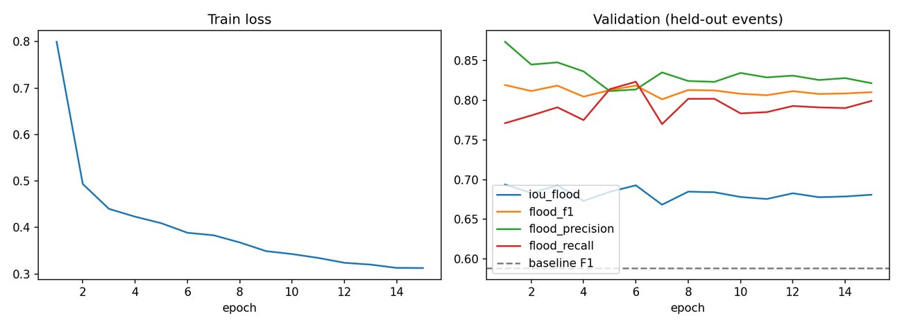
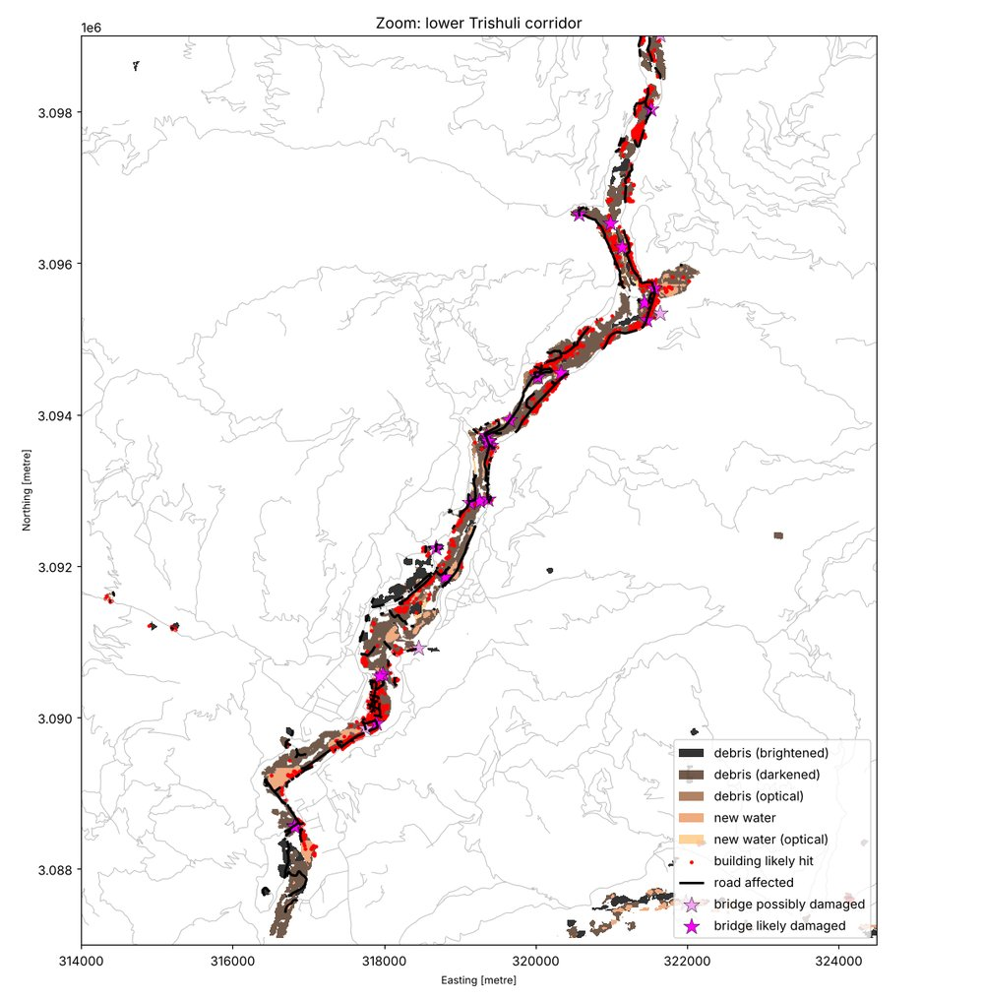
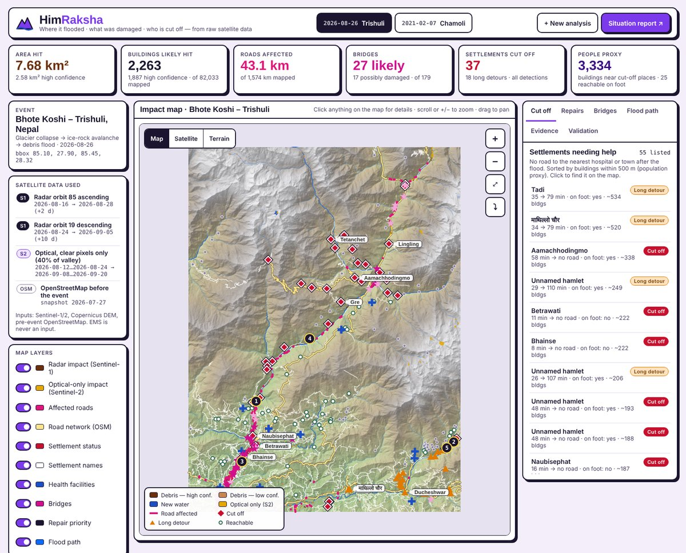
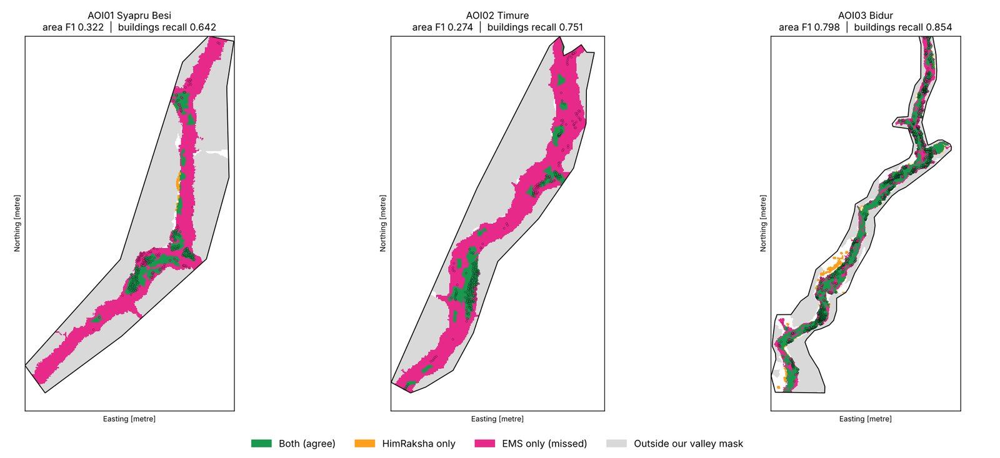
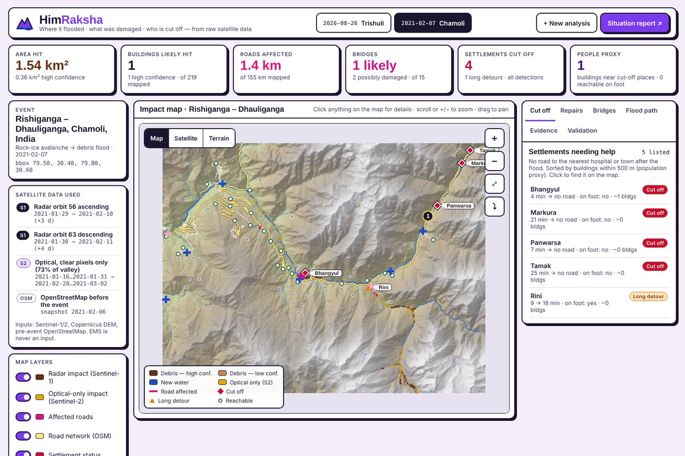
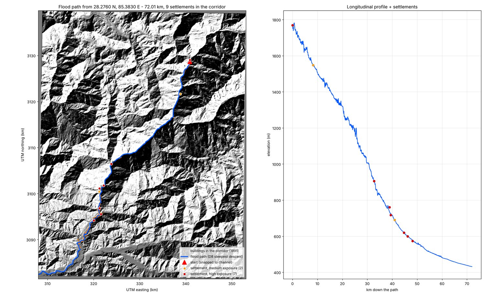
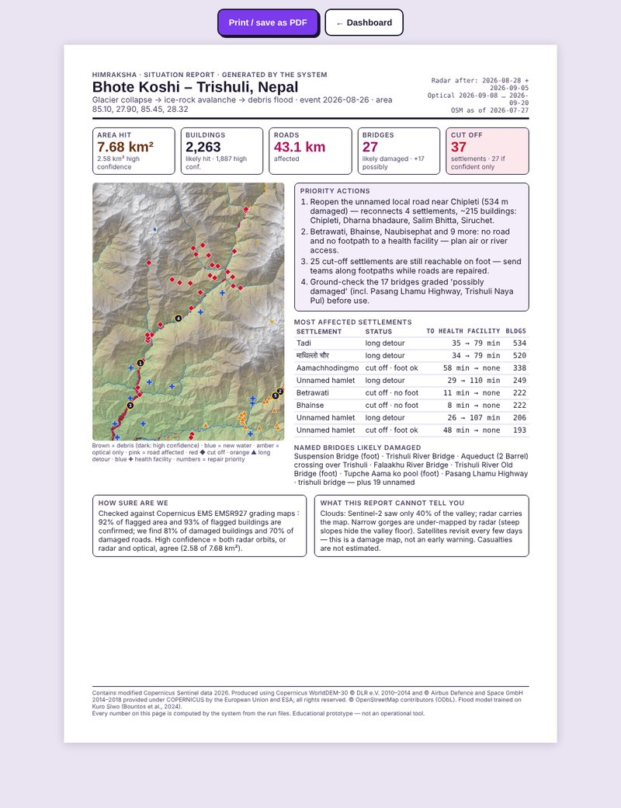

Multimodal AI Hackathon 2026 · Track B · Team HimRaksha: Anurag Kasi and Gayatri Markale (K. J. Somaiya School of Engineering, Mumbai) · Case study: 26 August 2026 Bhote Koshi–Trishuli flood, Nepal
What it does. HimRaksha takes an area and a flood date, downloads raw Sentinel-1 radar (and Sentinel-2 optical images where the sky is clear), and answers three questions for rescue teams: where did the flood hit, what was damaged, and who is cut off. A U-Net trained on Kuro Siwo finds new water; adaptive radar change detection finds debris. The results are overlaid on pre-event OpenStreetMap, and settlements are routed to the nearest health facility on the damaged road network. Everything ends in a map dashboard and a one-page situation report generated from the run's own numbers. The same unchanged pipeline was run end-to-end on a second unseen Himalayan event (Chamoli, 2021).
7.68 km²valley floor impacted (2.58 km² high confidence)
2,263buildings likely hit, of 82,033 mapped
27 + 17bridges likely / possibly damaged, of 179
37 / 172settlements cut off from a health facility (27 confident)
Checked against Copernicus EMS EMSR927 (AOI01–03)
Precision
Recall
F1
Affected area (pixels)
0.92
0.54
0.68
Damaged / destroyed buildings (2,964 in EMS)
0.93
0.81
0.87
Damaged roads (47.4 km in EMS)
0.92
0.70
0.79
Bridges graded "likely damaged" (28 in EMS)
0.81
0.68
0.74
EMS is never an input; it is read only by the evaluation scripts. The main miss is the narrow upstream gorges (Section 5).
1. Data and data rules
Input
What we used for Trishuli
Role
Sentinel-1 IW GRD (raw, CDSE)
Orbit 85 ascending 16 → 28 Aug (2 days after); orbit 19 descending 24 Aug → 5 Sep (10 days after). Same orbit, 12 days apart, 100 % coverage.
Main input: water and debris through cloud
Sentinel-2 L2A (CDSE)
Clearest dates first: before 12–24 Aug, after 8–20 Sep; 40 % of the valley clear on both dates
Optical confirmation where clear
Copernicus DEM GLO-30
Terrain correction, valley mask, model input, flood path
Terrain
OpenStreetMap, pre-event
ohsome API snapshot 27 Jul 2026 (before 26 Aug, as the rules require): 82,033 buildings, 1,574 km of road, 179 bridges, 172 settlements, 15 health facilities
Assets, road graph
Kuro Siwo
22,972 chips; 19,071 training, 3,901 validation from 7 held-out events
Model training only
EMSR927, JRC GSW
EMS grading maps; JRC occurrence tile 80E_30N
Checking / comparison only
The brief names ohsome API v1. Its extraction endpoints now refuse requests (HTTP 403) ahead of their 30 Nov 2026 shutdown, so we use API v2 with the same pre-event snapshot. The OSM date is checked to be before the flood date in two places in the notebook.
2. Method
Figure 1. Pipeline. One Colab notebook runs everything from raw data; only the area, flood date and OSM snapshot change between events. A full Trishuli run takes about 1 hour.
Image pairs. The Copernicus catalogue is searched ±36 days around the date for before/after Sentinel-1 images of the same relative orbit (same viewing geometry, so pixels can be compared directly), preferring ≥ 60 % coverage of the area. The best ascending and best descending pairs are kept.
Raw radar processing (our own chain). Raw GRD → Apply-Orbit-File → thermal and border noise removal → radiometric calibration (σ⁰) → subset → Range-Doppler terrain correction on the Copernicus DEM → 10 m UTM, dB (ESA SNAP gpt, scripted in grd_preprocess.py).
Valley floor. HAND (height above nearest drainage, pysheds) < 50 m and slope < 30°. Floods and debris flows run along the valley floor; this removes most false change on slopes.
New water: the U-Net (Section 3), applied to each before/after pair.
Debris: adaptive change detection. Despeckled VV and VH change with a threshold set per area, max(2 dB, 2.5 × robust σ of the valley) (Trishuli: 2.8–3.0 dB), finds ground that darkened (wet mud, ponding) or brightened (boulders, rough deposits). Patches < 0.5 ha are removed.
Observability-aware fusion. An orbit only votes where it returned valid data (radar shadow, layover and swath edges come out of terrain correction as no-data). Confidence is high when the observing orbits agree, medium with a single view, and low when they disagree.
Sentinel-2 when clear. SCL cloud mask (3-pixel buffer); composite of up to 4 dates per side, clearest first. Rules: new water (MNDWI > 0, NDVI < 0.1), vegetation stripped (NDVI drop > 0.25), river channel filled. Agreement with radar raises confidence to high; optical-only finds are added at medium confidence.
Damage. Buildings and roads within 10 m of the impact count as likely hit. A bridge always has water under it, so touching impact is not enough: likely damaged means ≥ 50 % of the deck footprint is impacted and debris is present at both ends; possibly damaged means impact within 30 m. Bridges are split into vehicle, foot and other.
Who is cut off. An OSM road graph with travel time by road class. Damaged segments are removed, and bridges only by their grade. Each settlement is routed (Dijkstra) to the nearest health facility or town, as the brief asks, and classed as cut off, long detour (> 1.5× and > +5 min) or unaffected. Footpaths are checked separately. Repair priority: reopen one damaged way at a time and count the settlements and buildings reconnected. Roads leaving the area are reported, never counted as a destination.
Bonus: flood path. From any clicked point, snap to the channel and follow D8 steepest descent on the DEM. Settlements with buildings ≤ 1 km from the path and ≤ 30 m above it are listed in order downstream (high exposure ≤ 10 m).
Dashboard and sitrep. Each run is exported to an offline Leaflet dashboard: clickable map layers, an "All / Confident only" switch, cut-off, repair, bridge, flood-path, evidence and validation tabs. The A4 situation report is filled by rules from the same files, so no number is typed by hand.
3. AI component — flood segmentation model
Model. U-Net with a ResNet-34 encoder initialised from ImageNet (allowed by the organizers). Inputs are 6 channels: pre- and post-event VV and VH in dB, relative DEM height and slope. Outputs are 3 classes: dry, permanent water, flood water. Loss: cross-entropy (flood ×2) + Dice; AdamW, one-cycle LR 5×10⁻⁴, 15 epochs, rotation and flip augmentation, Kaggle GPU. Exported to ONNX, so the pipeline runs it on a CPU.
Training data and split. Kuro Siwo (Bountos et al., 2024), 256 × 256 chips at 10 m. The split is by flood event, not by chip, so the 3,901 validation chips come from 7 events never seen in training.
Held-out Kuro Siwo events
Threshold baseline
U-Net
Flood F1
0.588
0.819
Flood precision
0.810
0.874
Flood recall
0.462
0.771
Flood IoU
0.417
0.694
Permanent-water IoU
0.282
0.639
Baseline = the classic rule (dark after and ≥ 3 dB darker). The best-IoU checkpoint is kept; it came at epoch 1, and later epochs stayed at 0.67–0.69 IoU. The model is stable, but longer training did not generalise better to new events.

Figure 2. Training loss and validation scores on the held-out events.
On unseen Himalayan scenes
Check (code/evaluation/model_only_check.py)
Result
Trishuli 2026: U-Net water inside the EMSR927 affected area
99.4 % (0.324 of 0.326 km²). What the model calls water is almost always real.
Trishuli 2026: whole system with vs without the U-Net
Area F1 0.678 vs 0.642; high-confidence F1 0.424 vs 0.377; recall 0.54 vs 0.50
Trishuli 2026: separating permanent from new water
Only 0.012 of 0.612 km² of U-Net "new water" lies on JRC permanent water (occurrence ≥ 50 %)
Trishuli 2026: vs Sentinel-2 where clear, 2–3 weeks later
15 % optical water, 30 % optical debris, 55 % no change. Water may have drained before the clear optical date.
Chamoli 2021 (winter debris flood)
0.07 km² of water, mostly low confidence, not confirmed by Sentinel-2 → treated as unconfirmed
Honest reading. The model is precise and clearly better than thresholding on held-out floods. In the Himalayan case studies, though, most damage is debris, not open water: EMS classes the Trishuli event as "Mass Movement / Landslide", and water is only 4 % of the EMS area. That is why HimRaksha pairs the model with change detection for debris rather than relying on the model alone. Without the model, area F1 falls by up to 0.036. This is an upper bound, because change detection might catch part of that water if the model were absent. We did not test on Sen1Floods11, which is optional in the brief.
4. Results — Trishuli, 26 August 2026
Where. 7.68 km² of the 100.9 km² valley floor impacted: 6.74 km² from radar (0.61 new water, 4.86 debris darkened, 1.27 debris brightened) plus 0.94 km² added by Sentinel-2. Radar and optical agree on 0.96 km². Both orbits saw 99.98 % of the valley floor. Impact follows the Bhote Koshi–Trishuli from the Rasuwagadhi border down to Bidur.
What. 2,263 buildings likely hit (1,887 high confidence) and 43.1 km of road (202 segments; 7.0 km of it primary road). 27 bridges likely damaged (23 high confidence; 16 vehicle, 8 foot, 3 other) and 17 possibly damaged.
Who. Of 172 settlements, 37 are cut off from every health facility by road (27 counting confident detections only), and 18 have long detours. 25 of the 37 can still be reached on foot. About 3,300 buildings lie within 500 m of cut-off settlements (a population proxy). 51 settlements had no mapped road within 500 m even before the flood and are reported separately.
Repairs. 5 single repairs reconnect someone. The top one is an unnamed road near Chipleti (534 m damaged), which reconnects 4 settlements (~215 buildings); third is the Pasang Lhamu Highway near Bhainse.
Flood path (bonus). From Rasuwagadhi (28.276 N, 85.383 E), the D8 path runs 72 km and passes 9 settlements (7 high exposure) and 1,991 buildings in the corridor, 516 of them ≤ 10 m above the channel. 73 % of the path inside the mapped valley has detected impact within 100 m, an independent consistency check between terrain and satellite.

Figure 3. Lower Trishuli corridor: debris (dark), new water, buildings likely hit (red), affected roads (black) and graded bridges (stars).

Figure 4. The dashboard for Trishuli: headline numbers, satellite data used and the clickable impact map (cut-off settlements ◆, repairs numbered, health facilities ✚). Tabs list who needs help, repairs, bridges, the flood path and validation; the Situation report button opens the generated one-page sitrep.
5. Comparison with Copernicus EMS EMSR927
We scored inside the three EMS areas that lie in our run area (AOI01 Syapru Besi, AOI02 Timure, AOI03 Bidur, latest product version each; "not analysed" parts removed). EMS photo-interprets very-high-resolution optical images; we use free 10 m radar and optical data automatically. Assets are matched within 20 m (buildings), 30 m (roads) and 60 m (bridges).

Figure 5. Green = both agree, orange = HimRaksha only, magenta = EMS only (missed), grey = outside our valley mask. Dots = EMS damaged buildings (green found, magenta missed).
EMS area
EMS affected km²
in our valley mask
Area P
Area R
Area F1
Buildings P
Buildings R
AOI01 Syapru Besi (gorge)
1.11
59 %
0.95
0.19
0.32
0.97
0.64
AOI02 Timure (gorge)
1.29
62 %
1.00
0.16
0.27
0.99
0.75
AOI03 Bidur (wide valley)
5.09
93 %
0.91
0.71
0.80
0.92
0.85
All three
7.49
83 %
0.92
0.54
0.68
0.93
0.81
Precision is high everywhere (0.91–1.00): what HimRaksha flags is almost always confirmed by EMS. Only high-confidence pixels: precision 0.95, recall 0.27.
Recall is the weak point in gorges. About 40 % of the EMS debris at Syapru Besi and Timure lies outside our valley mask (high on steep banks), and slopes facing away from or towards the satellite are hidden by radar shadow or layover. Inside the valley mask, area F1 is 0.76.
Roads: 70 % of the 47.4 km of EMS-damaged road found, 92 % of what we flag confirmed. Bridges: "likely damaged" finds 19 of 28 EMS bridges at 81 % precision; adding "possibly damaged" finds 22 of 28 at 63 %. That is why "possibly" is shown as "needs a ground check".
Sentinel-2 helped: radar only gave area F1 0.655 and buildings recall 0.80; with Sentinel-2, 0.678 and 0.81.
JRC Global Surface Water: compared, not used
The organizers allowed JRC permanent water if we compared with and without it. Masking JRC water (occurrence ≥ 25 / 50 / 75 %) lowered area F1 at every threshold (0.655 → 0.628 / 0.639 / 0.650, radar-only run). It mainly removes debris that filled the normal river channel, which EMS counts as damage. Buildings, roads, bridges and cut-off results did not change. The U-Net already separates permanent from new water, so we leave JRC out.
6. Second unseen event: Chamoli, 7 February 2021
To show that the system runs for any area and date, we ran the unchanged notebook on the Rishiganga–Dhauliganga debris flood (Uttarakhand, India), changing only CONFIG. It found Sentinel-1 orbits 56 (asc.) and 63 (desc.) with 100 % coverage and clear winter Sentinel-2 (73 % of the valley), switched UTM zone automatically, and used the OSM snapshot of 6 Feb 2021.
It traced a debris corridor from Ronti Gad down the Rishiganga to the Raini confluence and along the Dhauliganga to the Tapovan barrage, consistent with the before/after Sentinel-2 images (1.54 km², 0.36 km² high confidence). The bridge near the Tapovan barrage was graded likely damaged. Upstream villages (Markura, Panwarsa, Tamak, Bhangyul) were cut off, consistent with reports that the valley above Raini was cut off. It also showed limits: OSM in 2021 had only 219 buildings mapped, and the Raini bridge, in reality destroyed, was only "possibly damaged". There is no EMS grading map for this run, so it is checked visually only.

Figure 6. The Chamoli 2021 run in the dashboard: corridor, cut-off villages (◆) and the generated list.
7. Limitations — what HimRaksha cannot do
No early warning. Sentinel-1 passes every 6–12 days and Sentinel-2 needs clear sky, so HimRaksha maps what is left after an event (here 2 and 10 days after). It cannot warn of a glacier collapse or lake burst minutes or hours ahead, and short-lived water may have drained before the next pass.
Gorges. Steep slopes cause radar shadow and layover, and debris high on the banks lies outside the valley mask (HAND < 50 m, slope < 30°). Recall in the Trishuli gorges is 0.16–0.19.
The AI model maps water, not debris. Debris, the main damage in both events, comes from change detection with an adaptive threshold. The model was not tested on Sen1Floods11.
Settings were developed on Trishuli. The valley mask, the change threshold factor (2.5σ) and the bridge rule were chosen while developing on Trishuli, and EMS scores were looked at during development. Chamoli was run with the same settings as an independent test, but there is no reference map to score it. Settings may need changing for wide plains or urban floods, which we did not test.
Only as good as OpenStreetMap. Unmapped buildings and roads cannot be counted as damaged or cut off. Trishuli has no OSM "town" nodes, so routes go to the 15 health facilities. A settlement may be reported "cut off" while a road out of the area still exists (reported separately). Travel times use typical speeds, not road condition.
Bridges and buildings at 10 m. A small bridge deck can fall just outside the mapped impact (Raini). Building "hit" means "inside or within 10 m of the impact", not a structural damage grade.
Clouds and time gap. In the monsoon only 40 % of the Trishuli valley was clear on both Sentinel-2 dates, and the clear images are weeks apart, so optical confirmation is partial.
Runtime. A run takes about 1 hour on free Colab (mostly downloading full radar scenes). It is an educational prototype, not an operational tool.

Figure 7. Bonus: flood path traced from Rasuwagadhi on the Copernicus DEM (72 km), with the buildings in the corridor and the settlements along it, red = high exposure. In the dashboard a quick version runs live from any clicked point; it lists settlements by their location rather than by every building.

Figure 8. The one-page situation report, generated from the run's files.
8. Attributions and citations
"Contains modified Copernicus Sentinel data 2026." (Chamoli rehearsal: Copernicus Sentinel data 2021.)
Bountos, N. I., et al. (2024). Kuro Siwo: 33 billion m² under the water. A global multi-temporal satellite dataset for rapid flood mapping. NeurIPS 2024 Datasets and Benchmarks Track. (training data)
EMSR927 (checking only): "European Union, Copernicus Emergency Management Service data".
Pekel, J.-F., Cottam, A., Gorelick, N., Belward, A. S. (2016). High-resolution mapping of global surface water and its long-term changes. Nature 540, 418–422. (comparison only)
Responsibility. This disaster is recent, and many families are still affected. No images of victims are used. Code, run guide and model card: see the repository README (docs/RUN_GUIDE.md, model/README.md).